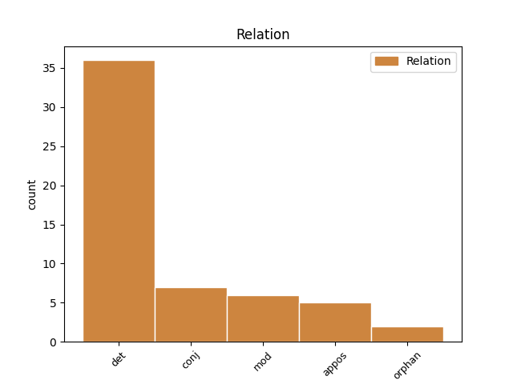
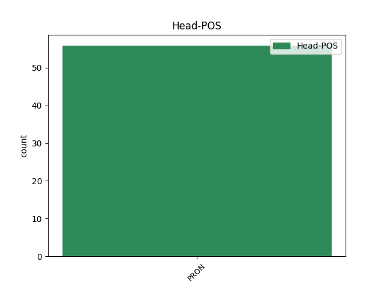
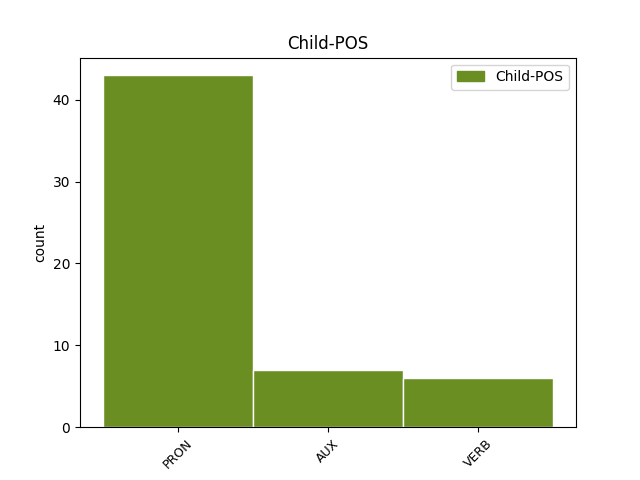

Distribution of features within this leaf



Agreement Rules sorted by frequency.
- When the dependent token is the determiner(det) of the head token, and the head token is PRON and the dependent token is PRON.
1 saei _ _ _ _ 0 _ _ _
2 seina _ _ _ _ 0 _ _ _
3 qen _ _ _ _ 0 _ _ _
4 frijoþ _ _ _ _ 0 _ _ _
5 sik sik PRON Pk Case=Acc|Gender=Masc|Number=Sing|Person=3|PronType=Prs|Reflex=Yes 0 _ _ _
6 silban silba PRON Pk Case=Acc|Gender=Masc|Number=Sing|Person=3|PronType=Prs|Reflex=Yes 5 det _ ref=EPH_5.28
7 frijoþ _ _ _ _ 0 _ _ _
1 duþe _ _ _ _ 0 _ _ _
2 jah _ _ _ _ 0 _ _ _
3 weis _ _ _ _ 0 _ _ _
4 awiliudom _ _ _ _ 0 _ _ _
5 guda _ _ _ _ 0 _ _ _
6 unsweibandans _ _ _ _ 0 _ _ _
7 unte _ _ _ _ 0 _ _ _
8 nimandans _ _ _ _ 0 _ _ _
9 at _ _ _ _ 0 _ _ _
10 uns _ _ _ _ 0 _ _ _
11 waurd _ _ _ _ 0 _ _ _
12 hauseinais _ _ _ _ 0 _ _ _
13 gudis _ _ _ _ 0 _ _ _
14 andnemuþ _ _ _ _ 0 _ _ _
15 ni _ _ _ _ 0 _ _ _
16 swaswe _ _ _ _ 0 _ _ _
17 waurd _ _ _ _ 0 _ _ _
18 manne _ _ _ _ 0 _ _ _
19 ak _ _ _ _ 0 _ _ _
20 swaswe _ _ _ _ 0 _ _ _
21 ist _ _ _ _ 0 _ _ _
22 sunjaba _ _ _ _ 0 _ _ _
23 waurd _ _ _ _ 0 _ _ _
24 gudis _ _ _ _ 0 _ _ _
25 þatei _ _ _ _ 0 _ _ _
26 jah _ _ _ _ 0 _ _ _
27 waurkeiþ _ _ _ _ 0 _ _ _
28 in _ _ _ _ 0 _ _ _
29 izwis jūs PRON Pp Case=Dat|Gender=Masc|Number=Plur|Person=2|PronType=Prs 0 _ _ _
30 juzei _ _ _ _ 0 _ _ _
31 galaubeiþ ga-laubjan VERB V- Mood=Ind|Number=Plur|Person=2|Tense=Pres|VerbForm=Fin|Voice=Act 29 mod _ ref=1THESS_2.13
1 jah _ _ _ _ 0 _ _ _
2 is is PRON Pp Case=Nom|Gender=Masc|Number=Sing|Person=3|PronType=Prs 0 _ _ _
3 ist _ _ _ _ 0 _ _ _
4 haubiþ _ _ _ _ 0 _ _ _
5 leikis _ _ _ _ 0 _ _ _
6 aikklesjons _ _ _ _ 0 _ _ _
7 saei _ _ _ _ 0 _ _ _
8 ist wisan AUX V- Mood=Ind|Number=Sing|Person=3|Tense=Pres|VerbForm=Fin|Voice=Act 2 appos _ LId=1|ref=COL_1.18
9 anastodeins _ _ _ _ 0 _ _ _
10 frumabaur _ _ _ _ 0 _ _ _
11 us _ _ _ _ 0 _ _ _
12 dauþaim _ _ _ _ 0 _ _ _
13 ei _ _ _ _ 0 _ _ _
14 sijai _ _ _ _ 0 _ _ _
15 in _ _ _ _ 0 _ _ _
16 allaim _ _ _ _ 0 _ _ _
17 is _ _ _ _ 0 _ _ _
18 frumadein _ _ _ _ 0 _ _ _
19 habands _ _ _ _ 0 _ _ _
1 ni _ _ _ _ 0 _ _ _
2 þata _ _ _ _ 0 _ _ _
3 ussuggwud _ _ _ _ 0 _ _ _
4 þatei _ _ _ _ 0 _ _ _
5 gatawida _ _ _ _ 0 _ _ _
6 Daweid _ _ _ _ 0 _ _ _
7 þan _ _ _ _ 0 _ _ _
8 gredags _ _ _ _ 0 _ _ _
9 was _ _ _ _ 0 _ _ _
10 silba silba PRON Pp Case=Nom|Gender=Masc|Number=Sing|Person=3|PronType=Prs 0 _ _ _
11 jah _ _ _ _ 0 _ _ _
12 þaiei _ _ _ _ 0 _ _ _
13 miþ _ _ _ _ 0 _ _ _
14 imma _ _ _ _ 0 _ _ _
15 wesun wisan AUX V- Mood=Ind|Number=Plur|Person=3|Tense=Past|VerbForm=Fin|Voice=Act 10 conj _ LId=1|ref=LUKE_6.3
1 þan _ _ _ _ 0 _ _ _
2 ushauheiþ _ _ _ _ 0 _ _ _
3 þana _ _ _ _ 0 _ _ _
4 sunu _ _ _ _ 0 _ _ _
5 mans _ _ _ _ 0 _ _ _
6 þanuh _ _ _ _ 0 _ _ _
7 ufkunnaiþ _ _ _ _ 0 _ _ _
8 þatei _ _ _ _ 0 _ _ _
9 ik ik PRON Pp Case=Nom|Gender=Masc|Number=Sing|Person=1|PronType=Prs 0 _ _ _
10 im _ _ _ _ 0 _ _ _
11 jah _ _ _ _ 0 _ _ _
12 af _ _ _ _ 0 _ _ _
13 mis _ _ _ _ 0 _ _ _
14 silbin _ _ _ _ 0 _ _ _
15 tauja taujan VERB V- Mood=Ind|Number=Sing|Person=1|Tense=Pres|VerbForm=Fin|Voice=Act 9 conj _ ref=JOHN_8.28
16 ni _ _ _ _ 0 _ _ _
17 waiht _ _ _ _ 0 _ _ _
18 ak _ _ _ _ 0 _ _ _
19 swaswe _ _ _ _ 0 _ _ _
20 laisida _ _ _ _ 0 _ _ _
21 mik _ _ _ _ 0 _ _ _
22 atta _ _ _ _ 0 _ _ _
23 meins _ _ _ _ 0 _ _ _
24 þata _ _ _ _ 0 _ _ _
25 rodja _ _ _ _ 0 _ _ _
1 aþþan _ _ _ _ 0 _ _ _
2 weis weis PRON Pp Case=Nom|Gender=Masc|Number=Plur|Person=1|PronType=Prs 0 _ _ _
3 sium _ _ _ _ 0 _ _ _
4 bimait _ _ _ _ 0 _ _ _
5 weis weis PRON Pp Case=Nom|Gender=Masc|Number=Plur|Person=1|PronType=Prs 2 appos _ ref=PHIL_3.3
6 ahmin _ _ _ _ 0 _ _ _
7 guda _ _ _ _ 0 _ _ _
8 skalkinondans _ _ _ _ 0 _ _ _
9 jah _ _ _ _ 0 _ _ _
10 ƕopandans _ _ _ _ 0 _ _ _
11 in _ _ _ _ 0 _ _ _
12 Xristau _ _ _ _ 0 _ _ _
13 Iesu _ _ _ _ 0 _ _ _
14 jan _ _ _ _ 0 _ _ _
15 ni _ _ _ _ 0 _ _ _
16 in _ _ _ _ 0 _ _ _
17 leika _ _ _ _ 0 _ _ _
18 gatrauam _ _ _ _ 0 _ _ _
19 jah _ _ _ _ 0 _ _ _
20 þan _ _ _ _ 0 _ _ _
21 ik _ _ _ _ 0 _ _ _
22 habands _ _ _ _ 0 _ _ _
23 trauain _ _ _ _ 0 _ _ _
24 jah _ _ _ _ 0 _ _ _
25 in _ _ _ _ 0 _ _ _
26 leika _ _ _ _ 0 _ _ _
1 jah _ _ _ _ 0 _ _ _
2 awiliudo _ _ _ _ 0 _ _ _
3 þamma _ _ _ _ 0 _ _ _
4 inswinþjandin _ _ _ _ 0 _ _ _
5 mik _ _ _ _ 0 _ _ _
6 Xristau _ _ _ _ 0 _ _ _
7 Iesu _ _ _ _ 0 _ _ _
8 fraujin _ _ _ _ 0 _ _ _
9 unsaramma _ _ _ _ 0 _ _ _
10 unte _ _ _ _ 0 _ _ _
11 triggwana _ _ _ _ 0 _ _ _
12 mik ik PRON Pp Case=Acc|Gender=Masc|Number=Sing|Person=1|PronType=Prs 0 _ _ _
13 rahnida _ _ _ _ 0 _ _ _
14 gasatjands _ _ _ _ 0 _ _ _
15 in _ _ _ _ 0 _ _ _
16 andbahtja _ _ _ _ 0 _ _ _
17 ikei _ _ _ _ 0 _ _ _
18 faura _ _ _ _ 0 _ _ _
19 was wisan AUX V- Mood=Ind|Number=Sing|Person=1|Tense=Past|VerbForm=Fin|Voice=Act 12 mod _ LId=1|ref=1TIM_1.13
20 wajamerjands _ _ _ _ 0 _ _ _
21 jah _ _ _ _ 0 _ _ _
22 wraks _ _ _ _ 0 _ _ _
23 jah _ _ _ _ 0 _ _ _
24 ufbrikands _ _ _ _ 0 _ _ _
Disagree Examples:
1 ƕa _ _ _ _ 0 _ _ _
2 uns weis PRON Pp Case=Dat|Gender=Fem|Number=Plur|Person=1|PronType=Prs 0 _ _ _
3 jah _ _ _ _ 0 _ _ _
4 þus þu PRON Pp Case=Dat|Gender=Masc|Number=Sing|Person=2|PronType=Prs 2 conj _ ref=MARK_1.24
1 frijos _ _ _ _ 0 _ _ _
2 neƕundjan _ _ _ _ 0 _ _ _
3 þeinana _ _ _ _ 0 _ _ _
4 swe _ _ _ _ 0 _ _ _
5 þuk þu PRON Pp Case=Acc|Gender=Masc|Number=Sing|Person=2|PronType=Prs 0 _ _ _
6 silban silba PRON Pk Case=Acc|Gender=Masc|Number=Sing|Person=3|PronType=Prs|Reflex=Yes 5 det _ ref=MARK_12.31
1 jabai _ _ _ _ 0 _ _ _
2 þata _ _ _ _ 0 _ _ _
3 taujis _ _ _ _ 0 _ _ _
4 bairhtei _ _ _ _ 0 _ _ _
5 þuk þu PRON Pp Case=Acc|Gender=Masc|Number=Sing|Person=2|PronType=Prs 0 _ _ _
6 silban silba PRON Pk Case=Acc|Gender=Masc|Number=Sing|Person=3|PronType=Prs|Reflex=Yes 5 det _ ref=JOHN_7.4
7 þizai _ _ _ _ 0 _ _ _
8 manasedai _ _ _ _ 0 _ _ _
1 jabai _ _ _ _ 0 _ _ _
2 ƕas _ _ _ _ 0 _ _ _
3 wili _ _ _ _ 0 _ _ _
4 wiljan _ _ _ _ 0 _ _ _
5 is _ _ _ _ 0 _ _ _
6 taujan _ _ _ _ 0 _ _ _
7 ufkunnaiþ _ _ _ _ 0 _ _ _
8 bi _ _ _ _ 0 _ _ _
9 þo _ _ _ _ 0 _ _ _
10 laisein _ _ _ _ 0 _ _ _
11 fram _ _ _ _ 0 _ _ _
12 uh _ _ _ _ 0 _ _ _
13 guda _ _ _ _ 0 _ _ _
14 sijai _ _ _ _ 0 _ _ _
15 þau _ _ _ _ 0 _ _ _
16 ik _ _ _ _ 0 _ _ _
17 u _ _ _ _ 0 _ _ _
18 fram _ _ _ _ 0 _ _ _
19 mis ik PRON Pp Case=Dat|Gender=Masc|Number=Sing|Person=1|PronType=Prs 0 _ _ _
20 silbin silba PRON Pk Case=Dat|Gender=Masc|Number=Sing|Person=3|PronType=Prs|Reflex=Yes 19 det _ ref=JOHN_7.17
21 rodja _ _ _ _ 0 _ _ _
1 jah _ _ _ _ 0 _ _ _
2 af _ _ _ _ 0 _ _ _
3 mis ik PRON Pp Case=Dat|Gender=Masc|Number=Sing|Person=1|PronType=Prs 0 _ _ _
4 silbin silba PRON Pk Case=Dat|Gender=Masc|Number=Sing|Person=3|PronType=Prs|Reflex=Yes 3 det _ ref=JOHN_7.28
5 ni _ _ _ _ 0 _ _ _
6 qam _ _ _ _ 0 _ _ _
7 ak _ _ _ _ 0 _ _ _
8 ist _ _ _ _ 0 _ _ _
9 sunjeins _ _ _ _ 0 _ _ _
10 saei _ _ _ _ 0 _ _ _
11 sandida _ _ _ _ 0 _ _ _
12 mik _ _ _ _ 0 _ _ _
13 þanei _ _ _ _ 0 _ _ _
14 jus _ _ _ _ 0 _ _ _
15 ni _ _ _ _ 0 _ _ _
16 kunnuþ _ _ _ _ 0 _ _ _